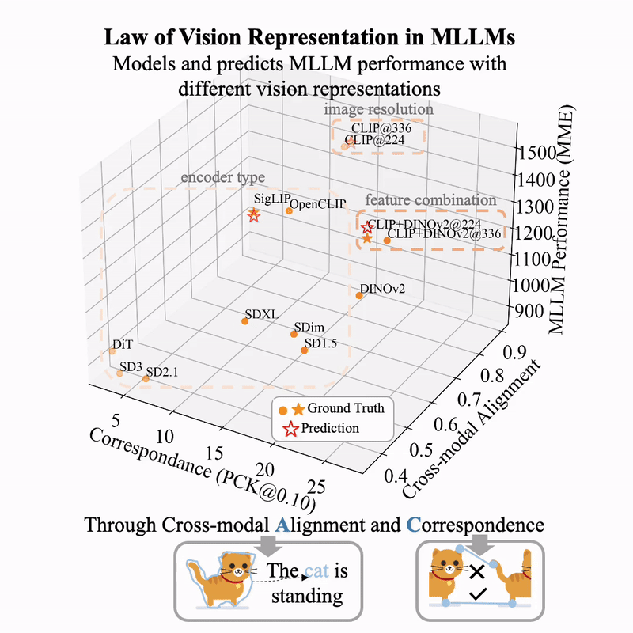

什么是表示空间？
by @karminski-牙医

(图片来自 huggingface.co/blog/Borise/law-vision-representation-in-mllms)
表示空间 (Representation Space) 是多模态人工智能中的核心概念，指不同模态数据（文本、图像、音频等）经过编码后映射到的统一数学空间。该空间使机器能够理解跨模态的语义关联，是实现多模态智能的数学基础。
核心定义
表示空间本质上是高维向量空间，具有以下关键属性：
- 跨模态可比性：不同模态数据在空间中的距离反映语义相似度
- 线性组合性：支持语义向量运算（如 v_程序员 - v_代码 + v_绘画 ≈ v_画家）
- 层次语义：不同维度对应不同抽象级别的特征（低层纹理→高层语义）
技术实现
构建方法
# 以对比学习为例
image_encoder = VisionTransformer() # 视觉编码器
text_encoder = TextTransformer() # 文本编码器
# 映射到统一空间
img_emb = image_encoder(img) # [batch_size, d]
txt_emb = text_encoder(text) # [batch_size, d]
# 对比损失计算
similarity = (img_emb @ txt_emb.T) * temperature # 计算图像-文本相似度矩阵
loss = cross_entropy(similarity, labels) # 对角线为正样本，其余为负样本, 使模型学习跨模态对齐数学特性
- 度量学习：定义距离函数 $d(v_i, v_j) = 1 - \frac{v_i \cdot v_j}{|v_i||v_j|}$
- 流形假设：同类数据在空间中形成连续流形（如所有"狗"图像构成子空间）
- 注意力兼容：支持跨模态注意力计算 $Attention(Q_{text}, K_{image}, V_{image})$
应用场景
- 跨模态检索：
text_emb = encode("火山喷发")→ 查找argmin(d(v_img, text_emb)) - 特征融合：
[img_emb; audio_emb] → 融合层 → 联合表示 - 零样本学习：通过prompt工程
v_"医疗报告" + v_CT影像 → 诊断建议 - 内容生成：文本引导的图像编辑
v_原图 + v_"添加彩虹" → 生成新图
实现挑战
- 模态鸿沟：不同模态特征分布差异（如图像特征的L2范数通常大于文本）
- 维度灾难：随着维度增加，数据稀疏性导致相似度度量可靠性下降
- 语义泄漏：图像背景纹理等无关特征被编码到语义维度
- 评估困境：缺乏客观的几何语义评估指标